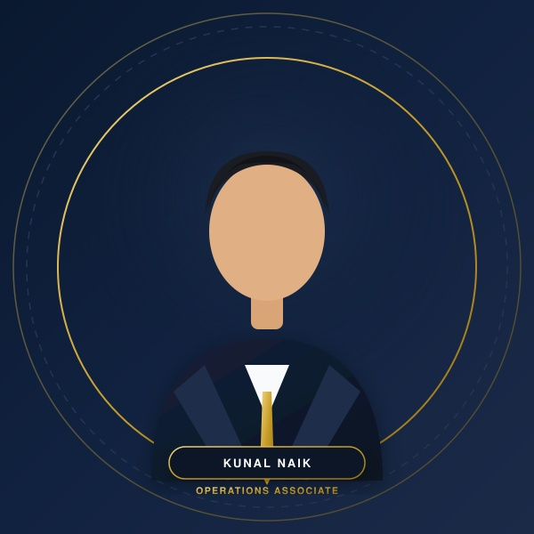

Kunal Naik
Operations Associate · Buzz Works Consultancy
Detail-oriented and process-driven professional with experience in Operations Setup and the complete Order to Cash (O2C) process, combining financial rigor with operational execution to drive timely delivery and accuracy.

About Kunal Naik
Accounting and Finance graduate combining structured financial acumen with operational process execution.
Executive Summary
ProfileDetail-oriented and process-driven professional with experience in Operations Setup and the complete Order to Cash (O2C) cycle. Holding a Bachelor of Accounting and Finance (BAF) from Mumbai University, my career focuses on upholding operational compliance, maintaining data accuracy, and bridging client requirements with internal execution.
At Buzz Works Consultancy, I work in Operations Setup and Order to Cash processes, handling production, audits, and client communication for smooth operations and timely delivery.
Work Experience
Hands-on operational execution, auditing, and client coordination at Buzz Works Consultancy.
Working in Operations Setup and Order to Cash processes, handling production, audits and client communication for smooth operations and timely delivery.
OPERATIONS SETUP
- • Conducted audit for operations to ensure accuracy and compliance with client requirements.
- • Handled client calls for queries, clarifications and issue resolution.
- • Monitored and managed production, ensuring timely and accurate processing of orders.
- • Assigned production to team members and tracked progress to meet SLA and quality standards.
- • Maintained detailed records and supported process improvements through regular feedback and reporting.
ORDER TO CASH (O2C) PROCESS
- • Performed production audit to validate accuracy of orders, invoices and receivables.
- • Managed the complete O2C cycle from order entry to cash application.
- • Coordinated with internal teams and clients to resolve discrepancies and follow up on pending orders.
- • Updated systems with accurate data and ensured timely invoice generation and payment collection.
- • Monitored aging reports and escalated issues to ensure reduced DSO (Days Sales Outstanding).
Skills & Software
Core capabilities, technical systems, and operational strengths extracted directly from verified resume.
Accounting & Finance
End-to-end receivables management and financial controls.
Operations & Delivery
Team tracking, workflow setup, and quality compliance.
Tools & Software
Productivity software, CRM platforms, and internal portals.
Client Calls & Coordination
Clear communications across internal and external stakeholders.
Data Analysis & Audits
Data integrity validation and SLA monitoring.
Professional Mindset
Key personal attributes documented in the resume.
Core Workflows & Projects
Major end-to-end responsibilities and workflows executed at Buzz Works Consultancy.
Order to Cash (O2C) Process & Receivables Audit
Managed the complete O2C cycle from order entry to cash application, performing strict production audits on orders, invoices, and receivables while monitoring aging reports to reduce DSO.
Operations Setup & Quality Compliance Auditing
Conducted operations audits for compliance with client requirements, oversaw order production, assigned workflow to team members, and handled direct client communication for issue resolution.
Education & Certifications
Verified university degree qualification and professional operational competencies.
Bachelor of Accounting and Finance (BAF)
Mumbai University
Specialized academic degree focusing on core financial accounting, management accounting, corporate taxation laws, auditing principles, cost accounting, and business financial management.
BAF Degree Credential
Order to Cash (O2C) Production Audit Qualification
Operations Setup & Quality Compliance Standards
CRM & MS Office Operational Competency
Let's connect
Seeking opportunities in Accounting & Finance, Operations Setup, or Order to Cash (O2C) cycles.